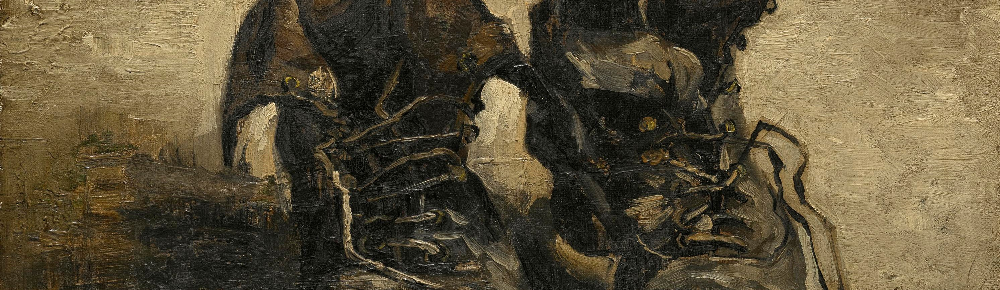

A Pair Of Shoes
This painting of a pair of down-at-heel shoes prompts speculation on a variety of psychological questions. They have been seen as symbolizing Van Gogh's difficult passage through life. A fellow student in Paris reported that Vincent bought these workman's boots at a flea market, intending to use them but they were too small so he used them as a painting refrence. However he wore them on a long and rainy walk to make them fit to be painted. Van Gogh made a number of still lives with old shoes. To him, as to several of his contemporaries, they may have been symbolic of the hard yet picturesque life of the laborer.